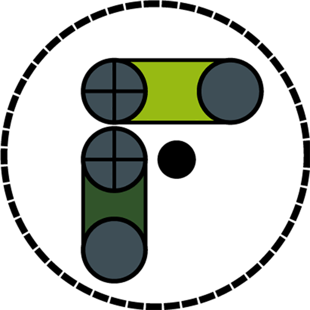

Real Cameras is a project that aims to add cameras that behave like real world cameras to three.js. Cameras in virtual worlds do not behave as real world cameras. This project will create camera objects that can be added to a three.js scene such that they behave the way that a real camera would behave. The sensor size, focal depth, aperture are all taken into account. The math to mimic the behaviour of the cameras are based on specifications of cameras and lenses that are used by cinematographers.
Real Cameras is a project of Gorilla Productions for their Filmtyme virtual camera solution and is being implemented by researchers at Seneca’s Centre for Development of Open Technology (CDOT).
 Take me to the project